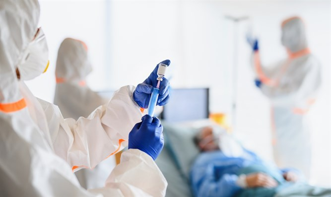

Ученые: плазменная терапия неэффективна против COVID-19

Результаты клинического исследования, проведенного в Аргентине, показывают, что один из способов лечения коронавируса с использованием плазмы, взятой у людей, выздоровевших от болезни, не так эффективен, как предполагалось ранее.
По данным
Reuters , в исследовании участвовали 333 пациента, госпитализированных с тяжелыми случаями пневмонии, вызванной COVID-19.Пациентов случайным образом распределили на лечение плазмой или плацебо, и через 30 дней уровень смертности в двух группах был почти идентичным (11% в группе, получавшей плазму, против 11,4% в группе плацебо).
Исследование было опубликовано в Медицинском журнале Новой Англии.В выводах говорится о том, что данная методика не привела к значительному улучшению здоровья пациентов или шансов на выздоровление.
Тем не менее, руководитель исследования, доктор Вентура Симонович из больницы Italiano de Buenos Aires, сказал, что исследование не исключило возможности лечения плазмой в более легких случаях COVID-19.
Posted On: 2020-11-25T13:46:00
Posted By: Марк Штоде,
Content Date: 2020-11-25
Download Date: 2021-03-17
Document ID: L0C0499KU